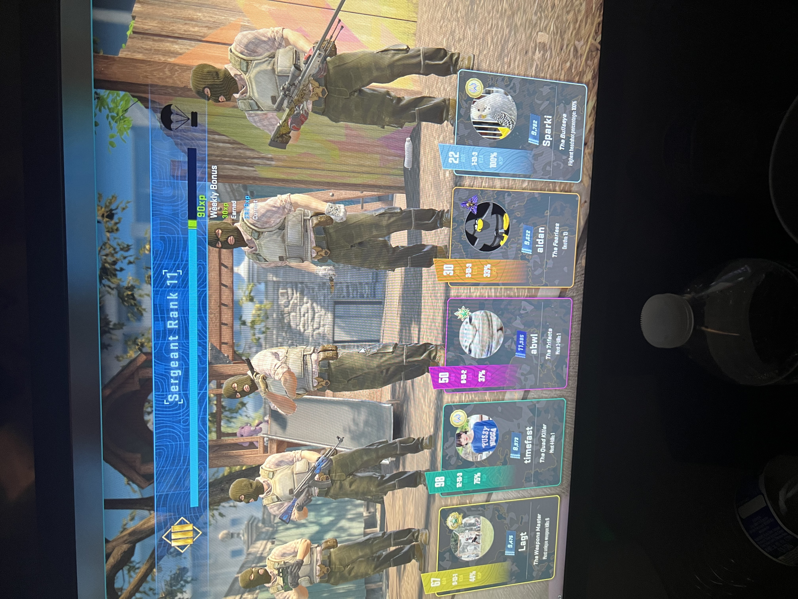
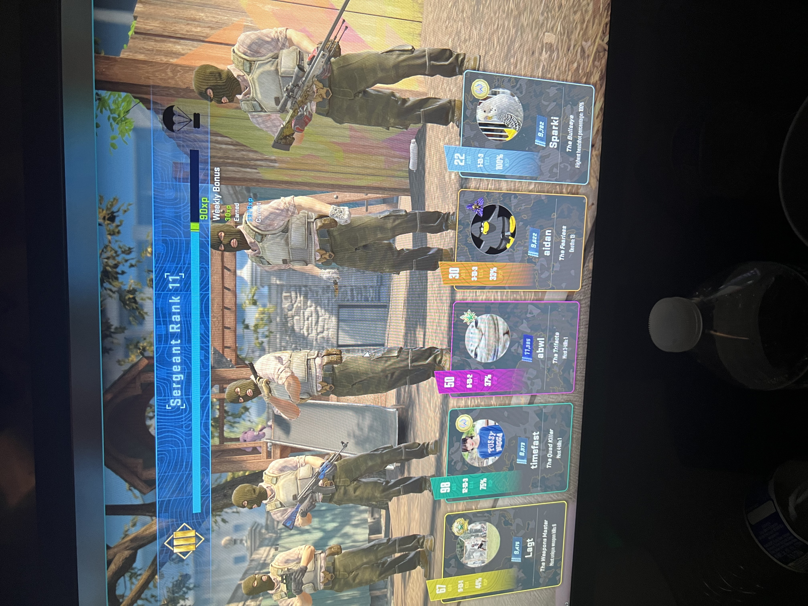

About Me
Overview
Determined computer science student searching for a summer internship opportunity. Looking to utilize & further grow skills in C++, Java, and Python programming languages. Consistently recognized for effective communication and being able to take a subject not currently known and quickly develop knowledge and application of said topic. Throughout my time as a student and restaurant manager, I have recognized my greatest strengths to be leadership, communication, resourcefulness, and problem solving.
My Story
I was born in Maryland but came to Michigan because I was offered a spot on the UDM lacrosse team. I then fell in love with the people and the school, which has become a significant part of my journey.
 


Hobbies and Interests
Lacrosse
As a passionate lacrosse player, the sport has taught me the importance of teamwork and strategic thinking, both on and off the field.
Cooking
Cooking is my escape to creativity, where I enjoy experimenting with flavors and techniques to bring joy to friends and family.
Poker
Poker sharpens my analytical and decision-making skills, offering a blend of calculated risk-taking and psychological insight.
Video Games
Video gaming is not just entertainment; it's a way to experience stories, build reflexes, and connect with a global community.
Legos
Building with Legos is a cherished childhood pastime that has evolved into a medium for creativity and relaxation.